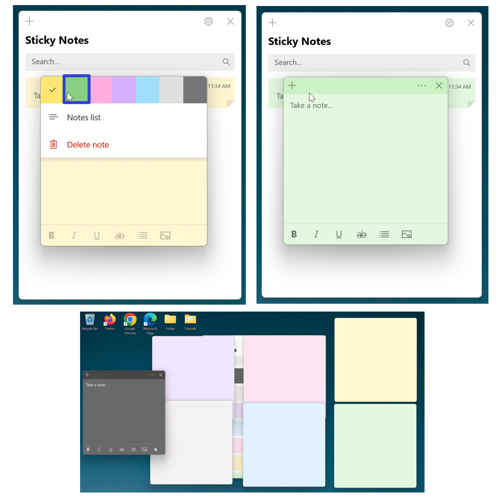
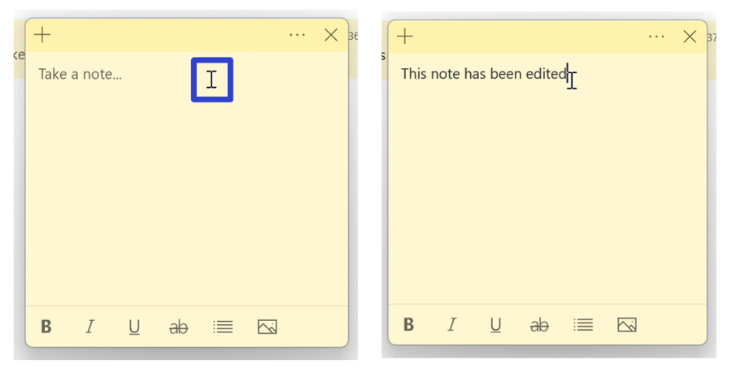
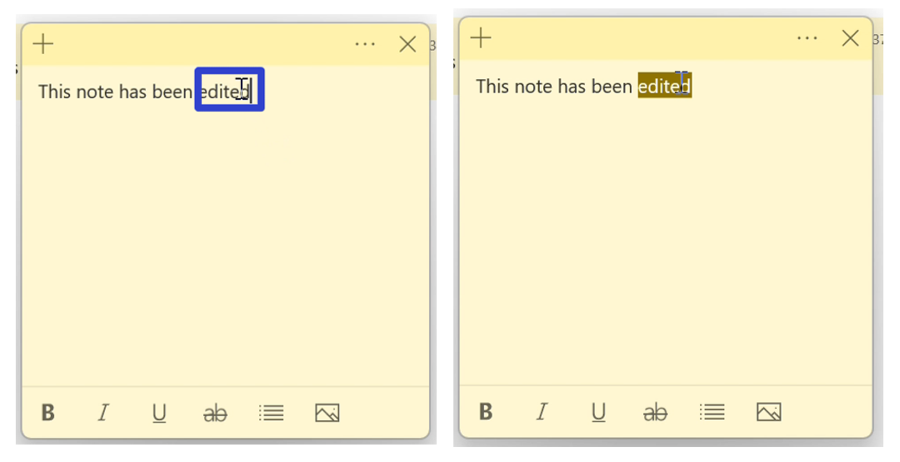
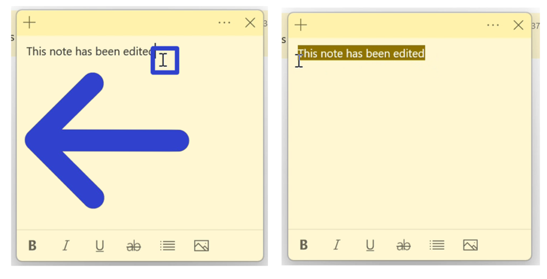
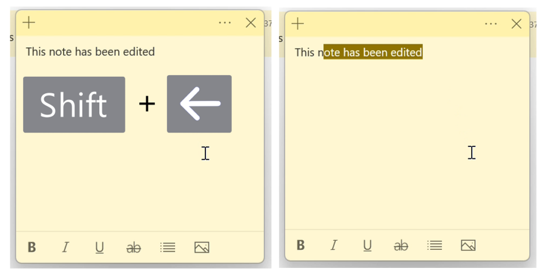
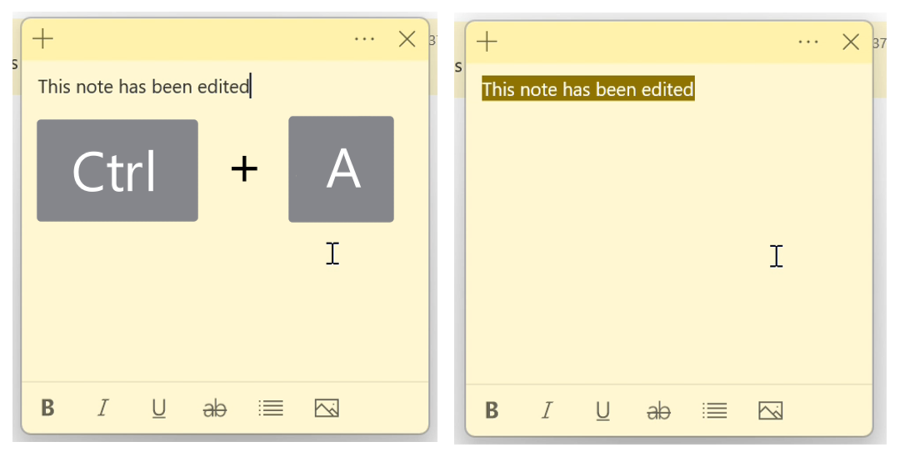
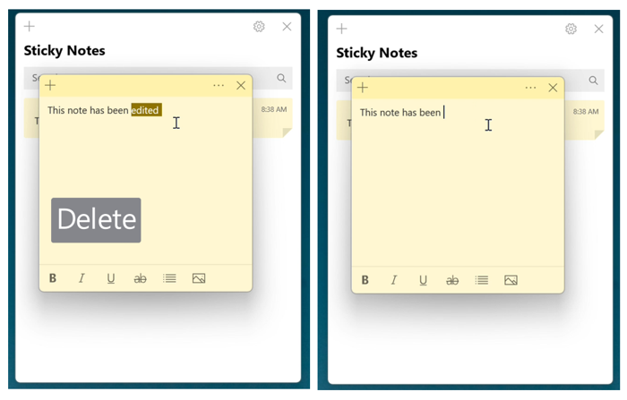
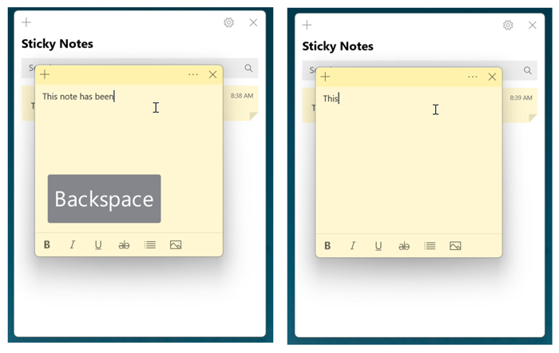

How to Edit Sticky Notes in the Microsoft Sticky Notes App (Windows 11)
This tutorial covers:
- How to Change the Color of a Sticky Note
- How to Edit Text in a Sticky Note
- How to Select Text in a Sticky Note:
- How to Delete Text in a Sticky Note
No time to scroll down? Click through this presentation tutorial:
See a tutorial video:
How to Change the Color of a Sticky Note
- Step 1: First open a sticky note. Go to the upper right and click the “Menu” or “…” button.

- Step 2: In the menu that opens, click one of the colors at the top to switch to that color. 
How to Edit Text in a Sticky Note
- Step 1: Open a sticky note. Click the sticky note and type any text. 
How to Select Text in a Sticky Note With Double Click
- Step 1: First edit a sticky note. Double click any text to select it. 
How to Select Text in a Sticky Note With Mouse
- Step 1: Edit a sticky note. Click, hold, and drag the mouse to the left or right of the text to select it. Release the mouse to stop selecting the text. 
How to Select Text in a Sticky Note With Keyboard
- Step 1: First edit a sticky note. Click the sticky note, and on the keyboard hold Shift and press the arrow keys to select the text. 
How to Select All Text in a Sticky Note With Keyboard Shortcut
- Step 1: Edit a sticky note. Click the sticky note, and on the keyboard press Ctrl + A. 
How to Delete Text in a Sticky Note With Keyboard
-
Method 1: First edit a sticky note and select any text. On the keyboard press Delete.
 -
Method 2: Edit a sticky note. Click to the right of the text, and on the keyboard press or hold Backspace.

Refer to these instructions later with this free PDF tutorial.